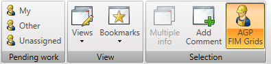
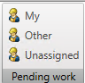
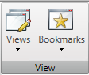
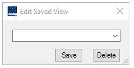
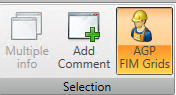
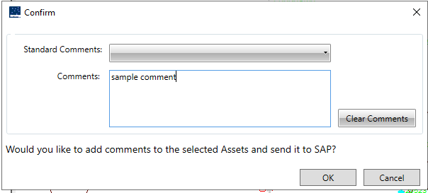

Map View
The user can use the Map View tab to view the assets related to pending work orders and navigate through the map areas among others.
Below is the MapView workgroup:

Pending Work
The user can use the Pending work group to view the work that is currently downloaded to the device. The user can use the toggle options namely, My and Other.

My icon
The user can use the My icon to view the assets related to the pending work orders that are assigned to The user in a yellow highlight.
Other icon
The user can use the Other icon to view the assets related to all work orders (available on the laptop) that fall within the geographical boundary of the currently opened map screen in a red highlight irrespective of whether they are assigned or not.
Unassigned icon
The user can use the Unassigned icon to view the assets related to all work orders (available on the laptop) that fall within the geographical boundary of the currently opened map screen in an orange highlight that is not assigned to anyone.
View
The user can use the View group to navigate through the map areas that the user has visited. The IWMS Client stores the view history. It also enables The user to create map views and add bookmarks for map locations.

View
Clicking the Views button, Edit saved View dialog box is displayed. The user can manage saved views by using this dialog box.

Bookmarks
The user can use the Bookmarks icon to create bookmarks for map locations.
When the user creates a bookmark, the application remembers the X-coordinate, Y-coordinate, the view scale, and the layer settings of the opened map.
To create a bookmark, the user must go to the location and set the layers to their liking.
Clicking the Bookmarks option displays the Edit Map Bookmarks dialog box. The user can manage saved bookmarks by using this dialog box.
In the Edit Map Bookmarks dialog box, type the bookmark name in the box, and then click Save.
To delete a saved bookmark, select the bookmark in the list, and then click Delete.
Selecting a bookmark in the bookmarks list loads the location associated with the selected bookmark.
Selection
The user can use the Multiple Info icon to view information of multiple items. The user needs to select the items that the user wants to view, and then click Open. The application displays multiple information boxes in new dialog boxes. When the Open Multiple Information Windows dialog box is closed, all open information boxes also get closed.

The user can use the Add Comment icon to add comments to an asset,
if the selected asset has an SAP linkage.

AGP FIM Grids:
This is the Accelerated Graphic port Field Inventory Map Grids